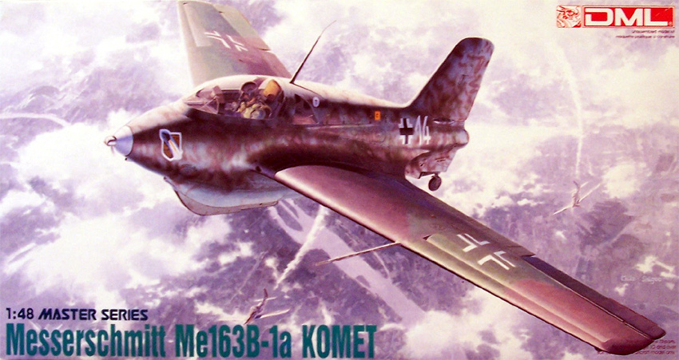

{kind=link}
{kind=link}
{kind=link}
{kind=link}
{kind=link}
{kind=link}


Dragon Models 1/48 Messerschmitt Me-163B �Komet�

Kit #5504
Collector�s Market Value $21.00
Images and text Copyright � 2007 by Matt Swan
Developmental Background
The story of the Me-163 Komet begins with Alexander Lippish and his work with tail-less gliders. The DFS-39 was a delta wing glider test bed that was ultimately developed into the rocket powered fighter we are familiar with from the Second World War. DFS which was the German Institute for Sailplane Flight had some serious issues with being able to actually produce working prototypes and by 1939 Lippish had requested and received permission to transfer to Messerschmitt where he could continue his design work. By early 1940 they had completed the first prototype and conducted the first powered test flight which achieved a speed of 342 mph.
Production of the A model Me-163 began. This version retained the sailplane landing skid and jettisonable wheels. On October 2, 1941 a Me-163A achieved a record speed of 623.8 mph, of course the entire project was shrouded in secrecy and those flight numbers were not revealed to the rest of the world until after the war. The jettisonable main landing gear proved to be a serious problem as the wheels came bouncing up and crashing into the plane which caused many planes to be damaged at take-off. On landing malfunctioning hydraulic dampers in the skid could lead to back injuries for the pilot and the aircraft was now immobile on the field presenting an obstacle for other Luftwaffe aircraft and a target for the enemy. Another aspect of the aircraft that presented a high degree of danger to the crew and ground personnel was the fuel for the rocket engine. The Walter HWK 109-509 used a hypergolic fuel formula, which added a true fuel of hydrazine hydrate and methanol, designated C-Stoff that burned with the oxygen-rich exhaust from the T-Stoff, used as the oxidizer, for added thrust. These fuels were highly combustible and would ignite just by making contact with each other plus should the fuel fall on human flesh it would actually begin to dissolve it. The pilot was unfortunate to have fuel tanks packed around him inside the cockpit and a fuel leak would be disastrous.
The Me-163B was the actual primary production version established in late 1941. It was commonly armed with two Mk-108 cannons in the wing root however there were some other armament variations. At one point designers experimented with photocells in the wings that would fire upward launching Sonderger�t 500 J�gerfaust. The idea here was that the aircraft would fly beneath an Allied bomber and the shadow cast by the larger aircraft would trigger the 50mm cannons launching the weapons into the underbelly of the aircraft. This program did meet with some limited success. With only eight minutes of powered flight the 163 was designated as a point defense interceptor and was stationed in rings about 25 miles diameter around key production facilities. By 1945 the 163D was heading to production, this version included a tricycle landing gear and increased fuel capacity and was redesignated as the Me-263. Today there are ten surviving examples of the Me-163B in various museums scattered across the world. For additional information on the Me-163 and its operational life I suggest reading �Messerschmitt Me 163 Komet� by Mano Ziegler, an excellent rocket pilot autobiography.
The Kit
The best kit of the Me-163 made was from Trimaster that included photo etched parts and metal landing gear. Unfortunately Trimaster folded many years ago however Dragon Models picked up their molds, replaced the white metal piece with plastic while retaining the PE fret. This kit is the result of that acquisition. Even considering that these molds are around thirty years old they have been very well maintained and the production parts are easily on par with anything being manufactured today. The kit is fairly simple with a low parts count but those parts are of excellent quality. There is no excess flash, mold separation lines are minimal and there are no evident sink marks or injector pin markings. The parts fit together very well and little or no filler will be necessary.
The single small fret of clear parts display very good clarity. The photo etched fret includes nice seatbelts and several detail panels for the landing skid. The model can be built with the landing skid deployed or retracted with a launching dolly in place. The tail gear can be positioned for either configuration. The kit also includes a standing pilot figure and boarding ladder. Taking inventory of the kit we have sixty one pieces done in light gray plastic along with four clear parts and fourteen photo etched pieces for a total of seventy nine pieces in the box.
You may click on the small images above to view larger pictures
Decals and instructions
Kit instructions consist of the typical four panel fold-out commonly found in Dragon kits. It opens with a good historical background of the aircraft in six languages. This is followed by a complete paint color chart. Next comes approximately seventeen exploded view assembly steps that include color call-outs and assembly options. Two panels are devoted to decal placement for two aircraft.
The kit decals come on a small sheet but include all the markings necessary for the two aircraft shown in the instructions. We can model �White 14� from 2./JG400 or �White 26� from 1./JG400. The decals include all needed service stencils and warning markings. They are nicely thing with good color density and print registry. They behave well with common setting solutions.
ExtraTech Walter HWK 509
The one single area that is lacking with this kit is the rocket engine � there is none. ExtraTech has come to the rescue with a very nice little resin package (kit #4809) that includes the Walter HWK 509 A2 rocket engine and a small fret of photo etched details. With an MSRP of $14.98 this is not really an expensive addition to the model. Now Dragon has recognized this shortfall and just a short time ago they reworked the original Trimaster molds to include a rocket motor. This new kit also includes a second fuselage set with a recessed cut line inside so the tail cone can be removed.
Conclusions
Trimaster made model kits that were years ahead of the industry, so far ahead that even now, thirty years later, they are still equal to and in some cases superior to kits that are being designed and produced today. The parts are of excellent quality with no flash or defects. They fit together very well. Instructions are clear and to the point. Aftermarket items include the ExtraTech rocket motor as well as various masking sets and decal options. Dragon has recognized the areas lacking with the original kit and have taken steps to improve the model by adding the engine and a spare fuselage in the event the modeler has problems with the surgery required to open the fuselage.
I feel this is a very nice representation of the Me-163B Komet and give it a very good recommendation.